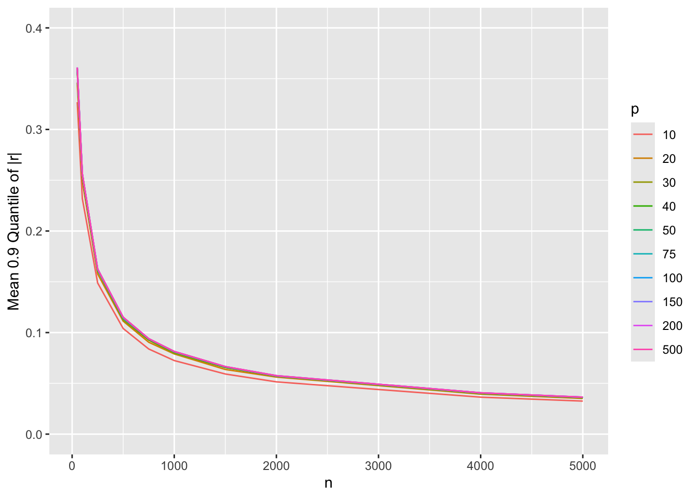
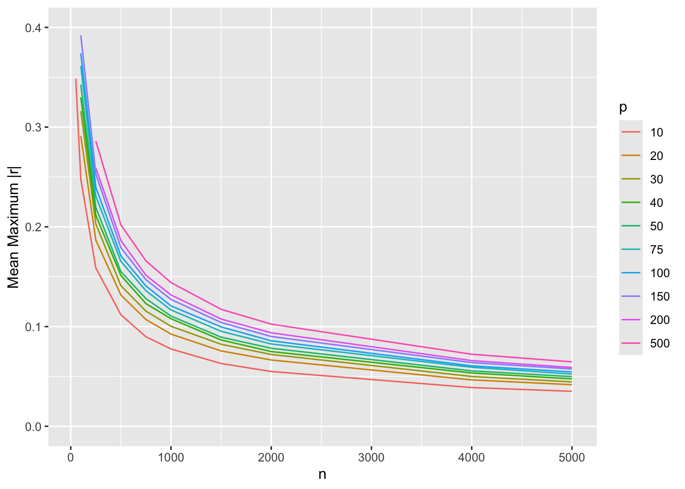

flowchart LR More[Simulate More Often!] Easy[Minimize Coding] --> Tr[data.table/data.frame and array<br>Tricks To Systematize Simulation of<br>Multiple Conditions]
18 Simulation
Some of the best ways to validate an analysis are
- If using any model/feature selection methods use the bootstrap to check whether the selection process is volatile, e.g., your sample size isn’t large enough too support making hard-and-fast selections of predictors/features
- Use Monte Carlo simulation to check if the correct model or correct predictors are usually selected
- Simulate a large dataset under a known model and known parameter values and make sure the estimation process you use can recover the true parameter values
- Simulate the statistical performance of a method under a variety of conditions
Unlike papers published in traditional journals which due to space limitations cannot study a huge variety of situations, simulation can study the performance of a method under conditions that mimic yours.
When simulating performance of various quantities under various conditions, creating a large number of variables makes the code long and tedious. It is better to to use data frames/tables or arrays to hold everything together. Data frames and arrays also lead to efficient graphics code for summarization.
18.1 Data Table Approach
The expand.grid function is useful for generating all combinations of simulation conditions. Suppose we wanted to simulate statistical properties of the maximum absolute value of the sample correlation coefficient from a matrix of all pairwise correlations from truly uncorrelated variables. We do this while varying the sample size n, the number of variables p, and the type of correlation (Pearson’s or Spearman’s, denoted by r and rho). With expand.grid we don’t need a lot of nested for loops. Run 500 simulations for each condition.
require(Hmisc)
require(qreport)
require(data.table)
hookaddcap() # make knitr call a function at the end of each chunk
# to try to automatically add to list of figure
nsim <- 500
R <- expand.grid(n=c(10, 20, 50, 100),
p=c(2, 5, 10, 20),
sim=1 : nsim)
setDT(R)
set.seed(1)
for(i in 1 : nrow(R)) { # took 1.4s
w <- R[i, ]
n <- w$n
p <- w$p
X <- matrix(rnorm(n * p), ncol=p)
cors <- cor(X)
maxr <- max(abs(cors[row(cors) < col(cors)])) # use upper triangle
# Better: max(abs(cors[upper.tri(cors)]))
cors <- cor(X, method='spearman')
maxrho <- max(abs(cors[row(cors) < col(cors)]))
set(R, i, 'maxr', maxr) # set is in data.table & is very fast
set(R, i, 'maxrho', maxrho) # set will create the variable if needed
# If not using data.table use this slower approach:
# R[i, 'maxr'] <- maxr etc.
}The simulations could have been cached or parallelized as discussed above.
Another good way to use expand.grid with data.table makes use of by= so that a simulation will be run for each combination in the expand.grid dataset. We make data.table subset the dataset, fetching one row at a time, by using the special variable .I in by=. This data.table-created variable holds the row numbers in the data, and by runs a separate simulation for each row. Here is an example.
R <- expand.grid(n=c(10, 20, 50, 100),
p=c(2, 5, 10, 20),
sim=1 : nsim)
setDT(R)
set.seed(1)
# Function to run one simulation
g <- function(n, p) {
X <- matrix(rnorm(n * p), ncol=p)
cors <- cor(X)
maxr <- max(abs(cors[row(cors) < col(cors)]))
cors <- cor(X, method='spearman')
maxrho <- max(abs(cors[row(cors) < col(cors)]))
list(maxr=maxr, maxrho=maxrho)
}
R[, .q(maxr, maxrho) := g(n, p), by=.I] # 1.0s
# Alternative: R <- R[, g(n,p), by=.(sim, p, n)]Compute the mean (over simulations) maximum correlation (over variables) and plot the results.
w <- R[, .(maxr = mean(maxr), maxrho=mean(maxrho)), by=.(n, p)]
# Make data table taller and thinner to put r, rho as different observations
u <- melt(w, id.vars=c('n', 'p'), variable.name='type', value.name='r')
u[, type := substring(type, 4)] # remove "max"
ps <- c(2, 5, 10, 20)
u[, p := factor(p, ps, paste0('p:', ps))]
g <- ggplot(u, aes(x=n, y=r, col=type)) + geom_jitter(height=0, width=2) +
ylim(0, 1) +
facet_wrap(~ p) +
guides(color=guide_legend(title='')) +
ylab('Mean Maximum Correlation Coefficient')
plotly::ggplotly(g)An example of simulating asymmetric conditions, i.e., where multiple methods are studied and each method has different parameters to vary, may be found here. See this for another data.table example plus other general simulation example code.
18.1.1 expand.grid with lapply and rbindlist
If you want to run the simulation combinations with expand.grid, it is sometimes convenient to have the computations produce a data.table or list from each row of settings in the expand.grid output. By using a trick with lapply we can create a list of data tables, each one computed using parameter values from one row. The data.table rbindlist function is extremely fast in combining these results into a single data table.
f <- function(alpha, beta) {
...
# y is a vector, alpha and beta are scalars (auto-expended to length of vector)
y <- some.function.of.alpha.beta
data.table(alpha, beta, y)
}
w <- expand.grid(alpha=c(0.01, 0.025, 0.05), beta=c(0.05, 0.1, 0.2))
setDT(w) # make it a data table
# w[i, f(...)] runs f() on values of alpha, beta in row i of w
# z is a list of data.tables
z <- lapply(1 : nrow(w), function(i) w[i, f(alpha, beta)])
results <- rbindlist(z) # stack the lists18.2 Array Approach
For large problems, storing results in R arrays is more efficient and doesn’t require duplication of values of n and p over simulations. Once the array is created it can be converted into a data table for graphing.
nsim <- 500
ns <- c(10, 20, 50, 100)
ps <- c(2, 5, 10, 20)
R <- array(NA, dim=c(nsim, length(ns), length(ps), 2),
dimnames=list(NULL,
n = as.character(ns),
p = as.character(ps),
type = c('r', 'rho')))
dim(R)[1] 500 4 4 2dimnames(R)[[1]]
NULL
$n
[1] "10" "20" "50" "100"
$p
[1] "2" "5" "10" "20"
$type
[1] "r" "rho"set.seed(1)Note the elegance below in how current simulation results are inserted into the simulation results object R, making use of dimension names as subscripts, except for subscript i for the simulation number which is a ordinary sequential integer subscript. Were the simulated values vectors instead of a scalar (maxr below), we would have used a statement such as R[i, as.character(n), as.character(p), type, ] <- calculated.vector.
See here for another example of this type.
for(i in 1 : nsim) { # took 1s
for(n in ns) {
for(p in ps) {
X <- matrix(rnorm(n * p), ncol=p)
for(type in c('r', 'rho')) {
cors <- cor(X,
method=switch(type, r = 'pearson', rho = 'spearman'))
maxr <- max(abs(cors[row(cors) < col(cors)]))
R[i, as.character(n), as.character(p), type] <- maxr
}
}
}
}There are many other ways to specify cor(X, method=...). Here are several other codings for method that will yield equivalent result.
fcase(type == 'r', 'pearson', type == 'rho', 'spearman')
fcase(type == 'r', 'pearson', default='spearman')
c(r='pearson', rho='spearman')[type]
.q(r=pearson, rho=spearman)[type]
if(type == 'r') 'pearson' else 'spearman'
ifelse(type == 'r', 'pearson', 'spearman')# Compute mean (over simulations) maximum correlation for each condition
m <- apply(R, 2:4, mean) # preserve dimensions 2,3,4 summarize over 1
# Convert the 3-dimensional array to a tall and thin data table
# Generalizations of row() and col() used for 2-dimensional matrices
# comes in handy: slice.index
dn <- dimnames(m)
u <- data.table(r = as.vector(m),
n = as.numeric(dn[[1]])[as.vector(slice.index(m, 1))],
p = as.numeric(dn[[2]])[as.vector(slice.index(m, 2))],
type = dn[[3]][as.vector(slice.index(m, 3))])
# If doing this a lot you may want to write a dimension expander function
slice <- function(a, i) {
dn <- all.is.numeric(dimnames(a)[[i]], 'vector') # all.is.numeric in Hmisc
dn[as.vector(slice.index(a, i))]
}
u <- data.table(r = as.vector(m),
n = slice(m, 1),
p = slice(m, 2),
type = slice(m, 3))
# Plot u using same ggplot code as aboveThe result is the same as in Figure 18.1.
Let’s extend the last simulation by considering a wider variety of sample sizes and number of variables and by adding a second statistic, which is the 0.99 quantile of absolute values of correlation coefficients. Let’s parallelize the calculations and also cache results for faster future compilations of the script. This time only use Pearson’s r and do only 250 repetitions per combination.
See Chapter 16 and Chapter 17
g <- function() {
nsim <- 250
# Function to do simulations on one core
run1 <- function(reps, showprogress, core) {
ns <- c(25, 50, 100, 250, 500, 750, 1000, 1500, 2000, 4000, 5000)
ps <- c(10, 20, 30, 40, 50, 75, 100, 150, 200, 500)
R <- array(NA, dim=c(reps, length(ns), length(ps), 2),
dimnames=list(NULL,
n = as.character(ns),
p = as.character(ps),
stat = c('maxr', 'qr') ) )
for(i in 1 : reps) {
showprogress(i, reps, core)
for(n in ns) {
for(p in ps) {
X <- matrix(rnorm(n * p), ncol=p)
cors <- cor(X)
ars <- abs(cors[row(cors) < col(cors)])
R[i, as.character(n), as.character(p), ] <-
c(max(ars), quantile(ars, 0.99))
}
}
}
list(R=R)
}
# Run cores in parallel and combine results
runParallel(run1, reps=nsim, seed=1, along=1)
}
R <- runifChanged(g)- 1
-
along=1makes the arrays be combined over cores by expanding the first dimension, which goes along with repetitions.
Plot just the new statistic
m <- apply(R, 2:4, mean) # preserve dimensions 2,3,4 summarize over 1
dn <- dimnames(m)
u <- data.table(r = as.vector(m),
n = as.numeric(dn[[1]])[as.vector(slice.index(m, 1))],
p = as.numeric(dn[[2]])[as.vector(slice.index(m, 2))],
stat = dn[[3]][as.vector(slice.index(m, 3))] )
u <- data.table(r = as.vector(m),
n = slice(m, 1),
p = slice(m, 2),
stat = slice(m, 3) )
head(u) r n p stat
<num> <num> <num> <char>
1: 0.48678824 25 10 maxr
2: 0.34863713 50 10 maxr
3: 0.24795281 100 10 maxr
4: 0.15877931 250 10 maxr
5: 0.11184621 500 10 maxr
6: 0.08974013 750 10 maxrw <- u[stat == 'qr']
ggplot(w, aes(x=n, y=r, col=factor(p))) + geom_line() +
ylim(0, 0.4) +
guides(color=guide_legend(title='p')) +
ylab('Mean 0.9 Quantile of |r|')
Show mean |r| as before
w <- u[stat == 'maxr']
saveRDS(w, '~/doc/bbr/rflow-simcorr.rds')
ggplot(w, aes(x=n, y=r, col=factor(p))) + geom_line() +
ylim(0, 0.4) +
guides(color=guide_legend(title='p')) +
ylab('Mean Maximum |r|')
18.3 Graphical Display of Simulation Results
The R rsimsum package implements a number of excellent graphical displays of simulation study results, including the nested loop plot of Rücker & Schwarzer exemplified here.